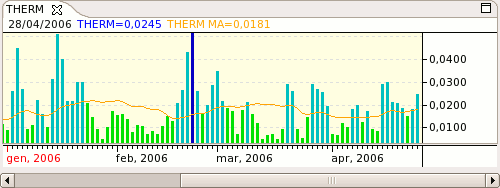

Elder's Market Thermometer - THERM

Parameters
- Name: The text that identifies the indicator
- Color: Color of the Moving Average plot
- Threshold: Threshold value
- Period: Period of the Moving Average
- Moving Average Type: Type of Moving Average to use
- Smoothing Period: Number of smoothing bars to use on THERM values before MA is applied
- Smoothing Type: The type of smoothing to use